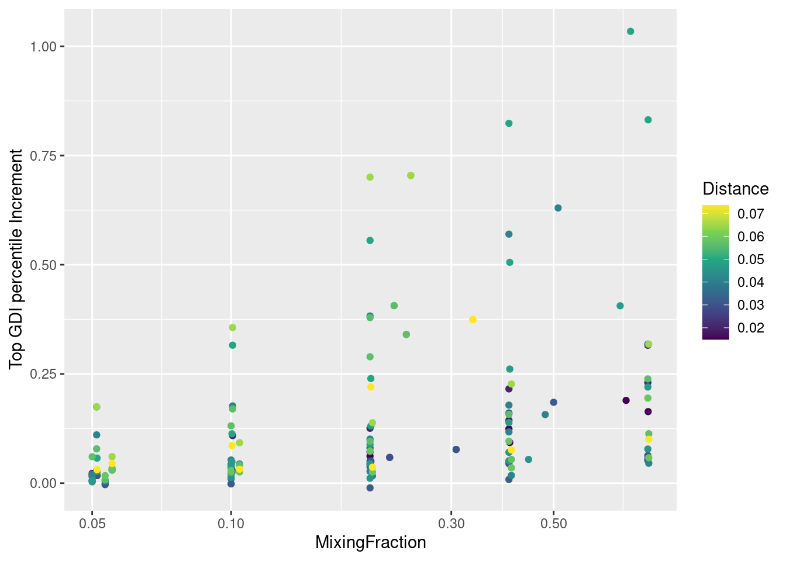
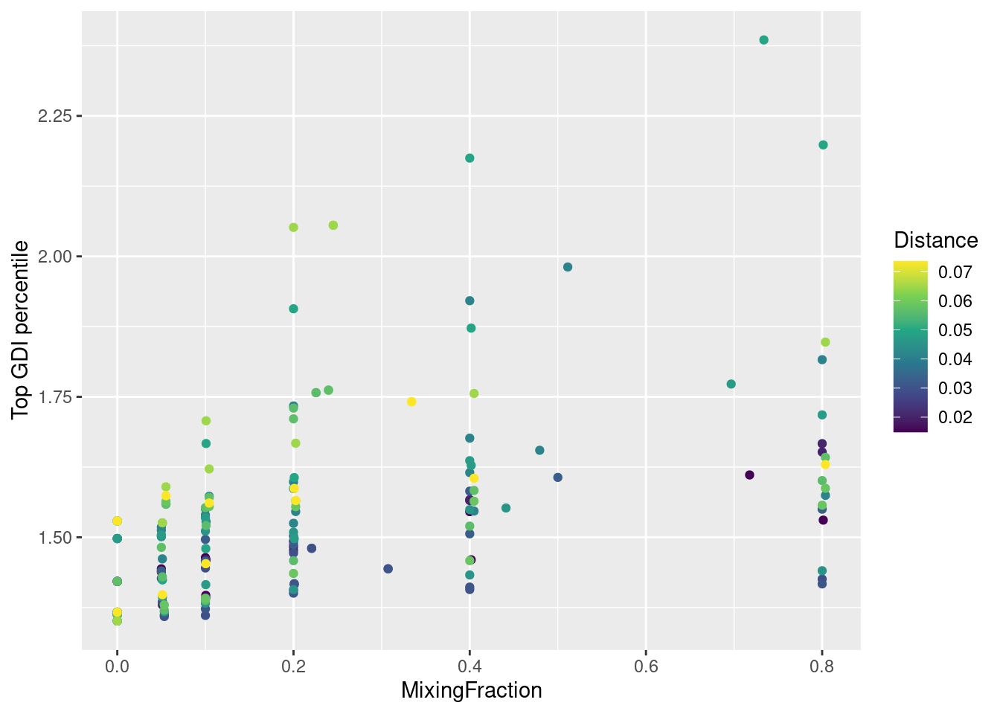
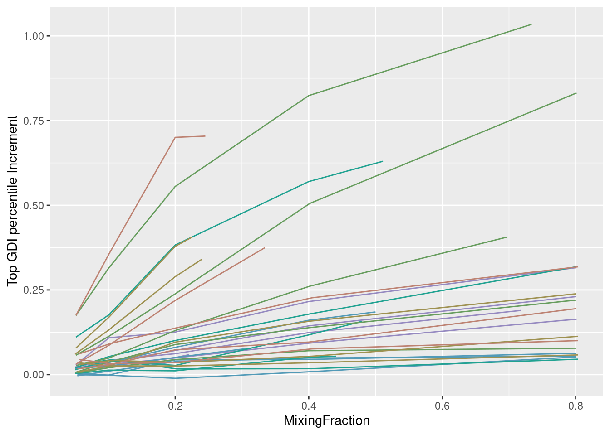
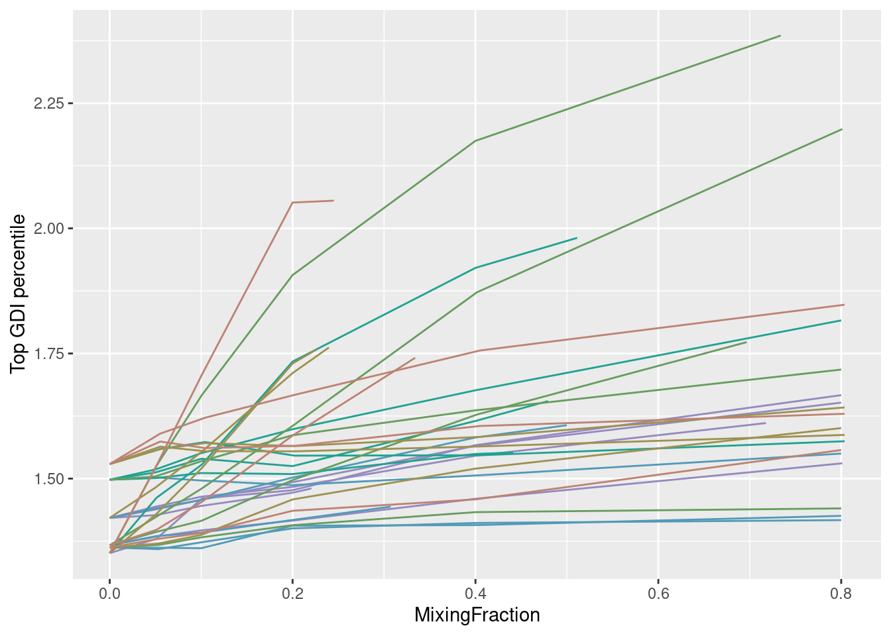

library(assertthat)
library(rlang)
library(stringr)
library(scales)
library(ggplot2)
library(ggh4x)
library(gridExtra)
library(grDevices)
library(zeallot)
library(conflicted)
library(data.table)
library(tibble)
library(tidyr)
#library(tidyverse)
library(parallelDist)
conflicts_prefer(zeallot::`%->%`, zeallot::`%<-%`)
inDir <- file.path("Data/Brown_PBMC_Datasets/")
outDir <- file.path("Results/GDI_Sensitivity/PBMCBrownRun40/")GDI Increment From Mixing using Run 40
Preamble
Re-Load calculated data for analysis
Define all mixing fractions
allMixingFractions <- c(0.05, 0.10, 0.20, 0.40, 0.80)
names(allMixingFractions) <-
str_pad(scales::label_percent()(allMixingFractions), 3, pad = "0")Actually load the data
allResList <-
lapply(
names(allMixingFractions),
function(mixStr) {
readRDS(file.path(outDir, paste0("GDI_with_", mixStr, "_Mixing.RDS")))
})
names(allResList) <- names(allMixingFractions)
assert_that(unique(sapply(allResList, ncol)) == 5L)[1] TRUEAdd baseline (“00%” mixing)
baseline <- allResList[[1L]]
baseline[["MixingFraction"]] <- 0.0
baseline[["GDI"]] <- baseline[["GDI"]] - baseline[["GDIIncrement"]]
baseline[["GDIIncrement"]] <- 0.0
allResListWithBase <- append(list("00%" = baseline), allResList)
rm(baseline)Merge all results and calculate the fitting regression for each cluster pair
allRes <-
cbind(allResList[[1L]][, 1:2],
lapply(allResList, function(df) { df[, 3:5] }))
colnames(allRes) <-
c(colnames(allResList[[1L]])[1:2],
paste0(
rep(colnames(allResList[[1L]])[3:5], 5),
"_",
rep(names(allMixingFractions), each = 3)
)
)
allResWithBase <-
cbind(allResListWithBase[[1L]][, 1:2],
lapply(allResListWithBase, function(df) { df[, 3:5] }))
colnames(allResWithBase) <-
c(colnames(allResListWithBase[[1L]])[1:2],
paste0(
rep(colnames(allResListWithBase[[1L]])[3:5], 5),
"_",
rep(c("00%", names(allMixingFractions)), each = 3)
)
)
assert_that(
identical(
allRes, allResWithBase[, str_detect(colnames(allResWithBase),
"00%", negate = TRUE)]
)
)[1] TRUERecall cluster distance and add it to the results
zeroOneAvg <- readRDS(file.path(outDir, "allZeroOne.RDS"))
# zeroOneAvg <- readRDS(file.path(outDir, "distanceZeroOne.RDS"))
distZeroOne <-
as.matrix(parDist(t(zeroOneAvg), method = "hellinger",
diag = TRUE, upper = TRUE))^2
distZeroOneLong <-
rownames_to_column(as.data.frame(distZeroOne), var = "MainCluster")
distZeroOneLong <-
pivot_longer(distZeroOneLong,
cols = !MainCluster,
names_to = "OtherCluster",
values_to = "Distance")
distZeroOneLong <-
as.data.frame(distZeroOneLong[distZeroOneLong[["Distance"]] != 0.0, ])
assert_that(all.equal(distZeroOneLong[, 1:2], allRes[, 1:2]))[1] TRUEperm <- order(distZeroOneLong[["Distance"]])Scatter plot of ΔGDI vs Distance
distDF <- cbind(distZeroOneLong[, "Distance", drop = FALSE],
sqrt(distZeroOneLong[, "Distance", drop = FALSE]))
colnames(distDF) <- c("Distance", "DistanceSqrt")
D2IPlot <- ggplot(cbind(allResList[["20%"]], distDF),
aes(x = Distance, y = GDIIncrement)) +
geom_point() +
geom_smooth(method = lm, formula = y ~ x)
# + xlim(0, 1.5) + ylim(0, 1.5) + coord_fixed()
plot(D2IPlot)
Merge all data and plot it using a-priory (squared) distance as discriminant
allResPerm <-
do.call(rbind, lapply(allResList, function(df) df[perm, ]))
allResPerm <-
cbind(allResPerm,
"ClusterPair" = rep.int(seq_along(perm),
length(allResList)),
"Distance" = rep(distZeroOneLong[["Distance"]][perm],
length(allResList)))
rownames(allResPerm) <- NULL
dim(allResPerm)[1] 150 7allResWithBasePerm <-
do.call(rbind,lapply(allResListWithBase, function(df) df[perm, ]))
allResWithBasePerm <-
cbind(allResWithBasePerm,
"ClusterPair" = rep.int(seq_along(perm),
length(allResListWithBase)),
"Distance" = rep(distZeroOneLong[["Distance"]][perm],
length(allResListWithBase)))
rownames(allResWithBasePerm) <- NULL
dim(allResWithBasePerm)[1] 180 7assert_that(
all.equal(
allResPerm,
allResWithBasePerm[(length(perm) + 1):nrow(allResWithBasePerm), ],
check.attributes = FALSE
),
msg = "Trouble with meshing all res permutated data"
)[1] TRUEPlot all data using the mixing fraction as abscissas and the distance as color
IScPlot <-
ggplot(allResPerm,
aes(x = MixingFraction, y = GDIIncrement, color = Distance)
) +
geom_point() +
scale_color_continuous(type = "viridis") +
scale_x_log10() +
ylab("Top GDI percentile Increment")
plot(IScPlot)
GScPlot <-
ggplot(allResWithBasePerm,
aes(x = MixingFraction, y = GDI, color = Distance)
) +
geom_point() +
scale_color_continuous(type = "viridis") +
ylab("Top GDI percentile")
plot(GScPlot)
Plot all data using the mixing fraction as abscissas and the cell type pairing as color
# IScPlot <-
# ggplot(allResPerm,
# aes(x = MixingFraction, y = GDIIncrement, color = Distance)
# ) +
# geom_point() +
# scale_color_continuous(type = "viridis") +
# scale_x_log10() +
# ylab("Top GDI percentile Increment")
#
# plot(IScPlot)
#
# GScPlot <-
# ggplot(allResWithBasePerm,
# aes(x = MixingFraction, y = GDI, color = Distance)
# ) +
# geom_point() +
# scale_color_continuous(type = "viridis") +
# ylab("Top GDI percentile")
#
# plot(GScPlot)Reorder by cluster pair
reOrder <- function(df, numBlocks) {
blockLength <- nrow(df) / numBlocks
permut <- rep(1:blockLength, each = numBlocks) +
rep(seq(0, nrow(df) - 1, by = blockLength), times = numBlocks)
return(df[permut, ])
}
allResPerm2 <- reOrder(allResPerm, 5)
allResWithBasePerm2 <- reOrder(allResWithBasePerm, 6)
head(allResPerm[["ClusterPair"]], 20) [1] 1 2 3 4 5 6 7 8 9 10 11 12 13 14 15 16 17 18 19 20head(allResPerm2[["ClusterPair"]], 20) [1] 1 1 1 1 1 2 2 2 2 2 3 3 3 3 3 4 4 4 4 4Plot by lines
numBuckets <- 6L
bucketLength <- length(perm) %/% numBuckets
ILinesPLot <-
ggplot(
allResPerm2,
aes(x = MixingFraction, y = GDIIncrement,
color = (ClusterPair - 1) %/% bucketLength + 0.5)
) +
geom_path(aes(group = ClusterPair)) +
theme(legend.position = "none") +
scale_colour_stepsn(
colours = rev(hcl.colors(numBuckets, palette = "Dark 2"))
) +
ylab("Top GDI percentile Increment")
plot(ILinesPLot)
GLinesPLot <-
ggplot(
allResWithBasePerm2,
aes(x = MixingFraction, y = GDI,
color = (ClusterPair - 1) %/% bucketLength + 0.5)
) +
geom_path(aes(group = ClusterPair)) +
theme(legend.position = "none") +
scale_colour_stepsn(
colours = rev(hcl.colors(numBuckets, palette = "Dark 2"))
) +
ylab("Top GDI percentile")
# geom_line(data = data.frame(cbind(MixingFraction = c(0,0.8), GDI = c(1.4,1.4))),
# aes(x = MixingFraction, y = GDI))
plot(GLinesPLot)
ΔGDI main plot
numBuckets <- 6L
bucketLength <- length(perm) %/% numBuckets
mg <- function(mixings) {
res <- mixings
actOn <- res != 0.0
res[actOn] <- round(log2(res[actOn] * 40))
return(res)
}
group <- factor((allResPerm[["ClusterPair"]] - 1) %/% bucketLength + 1)
levels(group) <- paste0("Distance bin ", 1:numBuckets)
discreteMixing <- factor(mg(allResPerm[["MixingFraction"]]))
levels(discreteMixing) <- names(allMixingFractions)
allResPermBuck <-
cbind(allResPerm, "Group" = group, "DiscreteMixing" = discreteMixing)
first.part <- c("Distance bin 1", "Distance bin 2", "Distance bin 3")
second.part <- c("Distance bin 4", "Distance bin 5", "Distance bin 6")
IBoxPlotA <-
ggplot(
allResPermBuck[allResPermBuck[["Group"]] %in% first.part,],
aes(x = DiscreteMixing, y = GDIIncrement,
fill = Group, group = DiscreteMixing)
) +
geom_boxplot() +
geom_jitter(width = 0.25, alpha = 0.5) +
scale_fill_manual(
values = c("#4C0D7A", "#3C279C", "#4C29B5")
# values = c("#0B5345", "#117A65", "#16A085")
) +
facet_grid2(cols = vars(Group)) +
scale_y_continuous(
limits = c(-0.05, 1.15),
breaks = scales::breaks_width(0.5)
) +
theme_light() +
theme(legend.position = "none", axis.title.x = element_blank()) +
labs(
y = ""
)
IBoxPlotB <-
ggplot(
allResPermBuck[allResPermBuck[["Group"]] %in% second.part, ],
aes(x = DiscreteMixing, y = GDIIncrement,
fill = Group, group = DiscreteMixing)
) +
geom_boxplot() +
geom_jitter(width = 0.25, alpha = 0.5) +
scale_fill_manual(
values = c("#702FCC", "#9E79D4", "#AA96CF")
# values = c("#1ABC9C", "#48C9B0", "#A3E4D7")
) +
facet_grid2(cols = vars(Group)) +
scale_y_continuous(
limits = c(-0.05, 1.45),
breaks = scales::breaks_width(0.5)
) +
theme_light() +
theme(legend.position = "none") +
labs(
x = "Ratio between sizes of second and first cluster",
y = "Variation of the 99th percentile of GDI scores"
)
finalIPlot <-
gridExtra::grid.arrange(
IBoxPlotA, IBoxPlotB, nrow = 9, ncol = 1,
layout_matrix = cbind(rep(1:2, each = 5)[2:10])
)
grDevices::pdf(file.path(outDir, "GDI-Increment_PBMC-Brown_Run-40.pdf"),
width = 7, height = 7)
grid::grid.newpage()
grid::grid.draw(finalIPlot)
grDevices::dev.off()png
2 GDI main plot
numBuckets <- 6L
bucketLength <- length(perm) %/% numBuckets
mg <- function(mixings) {
res <- mixings
actOn <- res != 0.0
res[actOn] <- round(log2(res[actOn] * 40))
return(res)
}
group <- factor((allResWithBasePerm[["ClusterPair"]] - 1) %/% bucketLength + 1)
levels(group) <- paste0("Distance bin ", 1:numBuckets)
discreteMixing <- factor(mg(allResWithBasePerm[["MixingFraction"]]))
levels(discreteMixing) <- c("00%", names(allMixingFractions))
allResWithBasePermBuck <-
cbind(allResWithBasePerm, "Group" = group, "DiscreteMixing" = discreteMixing)
first.part <- c("Distance bin 1", "Distance bin 2", "Distance bin 3")
second.part <- c("Distance bin 4", "Distance bin 5", "Distance bin 6")
GBoxPlotA <-
ggplot(
allResWithBasePermBuck[allResWithBasePermBuck[["Group"]] %in% first.part,],
aes(x = DiscreteMixing, y = GDI,
fill = Group, group = DiscreteMixing)
) +
geom_boxplot() +
geom_jitter(width = 0.25, alpha = 0.5) +
scale_fill_manual(
values = c("#4C0D7A", "#3C279C", "#4C29B5")
# values = c("#0B5345", "#117A65", "#16A085")
) +
facet_grid2(cols = vars(Group)) +
scale_y_continuous(
limits = c(1.2, 2.40),
breaks = scales::breaks_width(0.5)
) +
theme_light() +
theme(legend.position = "none", axis.title.x = element_blank()) +
labs(
y = "Top 1% GDI score of genes"
)
GBoxPlotB <-
ggplot(
allResWithBasePermBuck[allResWithBasePermBuck[["Group"]] %in% second.part,],
aes(x = DiscreteMixing, y = GDI,
fill = Group, group = DiscreteMixing)
) +
geom_boxplot() +
geom_jitter(width = 0.25, alpha = 0.5) +
scale_fill_manual(
values = c("#702FCC", "#9E79D4", "#AA96CF")
# values = c("#1ABC9C", "#48C9B0", "#A3E4D7")
) +
facet_grid2(cols = vars(Group)) +
scale_y_continuous(
limits = c(1.20, 2.70),
breaks = scales::breaks_width(0.5)
) +
theme_light() +
theme(legend.position = "none") +
labs(
x = "Ratio between sizes of second and first cluster",
y = "Top 1% GDI score of genes"
)
finalGPlot <-
gridExtra::grid.arrange(
GBoxPlotA, GBoxPlotB, nrow = 9, ncol = 1,
layout_matrix = cbind(rep(1:2, each = 5)[2:10])
)
grDevices::pdf(file.path(outDir, "GDI_PBMC-Brown_Run-40.pdf"),
width = 7, height = 7)
grid::grid.newpage()
grid::grid.draw(finalGPlot)
grDevices::dev.off()png
2 Sys.time()[1] "2026-02-02 15:44:26 CET"#Sys.info()
sessionInfo()R version 4.5.2 (2025-10-31)
Platform: x86_64-pc-linux-gnu
Running under: Ubuntu 22.04.5 LTS
Matrix products: default
BLAS: /usr/lib/x86_64-linux-gnu/blas/libblas.so.3.10.0
LAPACK: /usr/lib/x86_64-linux-gnu/lapack/liblapack.so.3.10.0 LAPACK version 3.10.0
locale:
[1] LC_CTYPE=C.UTF-8 LC_NUMERIC=C LC_TIME=C.UTF-8
[4] LC_COLLATE=C.UTF-8 LC_MONETARY=C.UTF-8 LC_MESSAGES=C.UTF-8
[7] LC_PAPER=C.UTF-8 LC_NAME=C LC_ADDRESS=C
[10] LC_TELEPHONE=C LC_MEASUREMENT=C.UTF-8 LC_IDENTIFICATION=C
time zone: Europe/Rome
tzcode source: system (glibc)
attached base packages:
[1] stats graphics grDevices utils datasets methods base
other attached packages:
[1] parallelDist_0.2.6 tidyr_1.3.1 tibble_3.3.0 data.table_1.18.0
[5] conflicted_1.2.0 zeallot_0.2.0 gridExtra_2.3 ggh4x_0.3.1
[9] ggplot2_4.0.1 scales_1.4.0 stringr_1.6.0 rlang_1.1.7
[13] assertthat_0.2.1
loaded via a namespace (and not attached):
[1] generics_0.1.3 stringi_1.8.7 lattice_0.22-7
[4] digest_0.6.37 magrittr_2.0.4 evaluate_1.0.5
[7] grid_4.5.2 RColorBrewer_1.1-3 fastmap_1.2.0
[10] jsonlite_2.0.0 Matrix_1.7-4 mgcv_1.9-3
[13] purrr_1.2.0 viridisLite_0.4.2 codetools_0.2-20
[16] cli_3.6.5 splines_4.5.2 withr_3.0.2
[19] cachem_1.1.0 yaml_2.3.12 tools_4.5.2
[22] memoise_2.0.1 dplyr_1.1.4 vctrs_0.7.0
[25] R6_2.6.1 lifecycle_1.0.4 htmlwidgets_1.6.4
[28] pkgconfig_2.0.3 RcppParallel_5.1.10 pillar_1.11.1
[31] gtable_0.3.6 glue_1.8.0 Rcpp_1.1.0
[34] xfun_0.52 tidyselect_1.2.1 knitr_1.50
[37] farver_2.1.2 htmltools_0.5.8.1 nlme_3.1-168
[40] labeling_0.4.3 rmarkdown_2.29 compiler_4.5.2
[43] S7_0.2.1